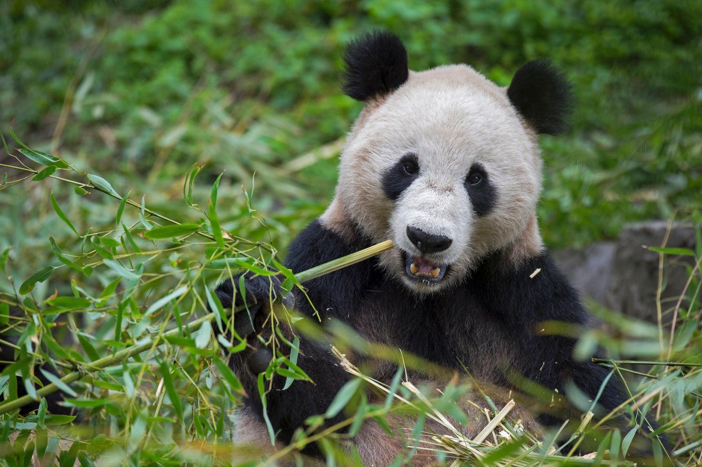
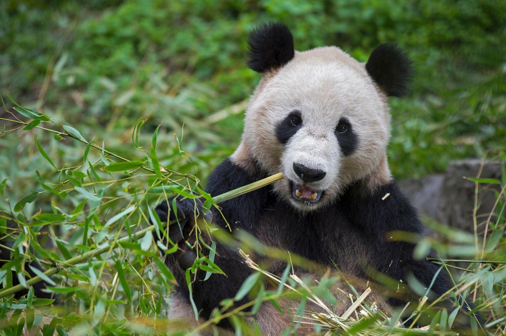
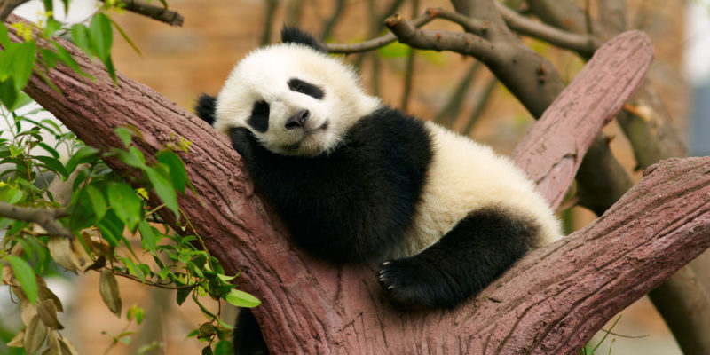
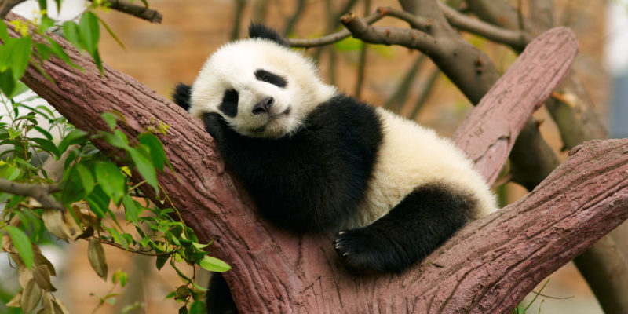

Panda
 

 

Caracteristicas
El panda, oso panda o panda gigante (Ailuropoda melanoleuca )es una especie de mamífero del orden de los carnívoros. El estudio de su ADN lo engloba entre los miembros de la familia de los osos, perteneciente a la subfamilia de los tremarctinos. Su promedio de vida es de 20 años, y pueden llegar a medir 2 metros y pesa hasta 120 kg.
Habitat
Los pandas viven principalmente en bosques de bambú, en lo alto de las montañas del oeste de China.
Dieta
: Por mas que estos osos essten catalogados como carnivoros, su dieta se basa en un 99% en bambu, siendo esta una opcion mucho mas accesible. Como resultado de esta dieta, los osos Panda deben estar comiendo casi todo el dia.